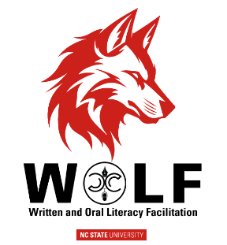

NC State Campus Writing and Speaking Program

Written and Oral Literacy Facilitation — a faculty development program that builds communication-rich courses across the curriculum.
Get started with WOLFWhat is WOLF
A structured partnership between CWSP and your department
WOLF pairs faculty with a CWSP liaison to audit communication practices, design scaffolded assignments, and build evidence of student learning. The program runs in three phases and adapts to the needs of any discipline.
Phase 01
Inquiry
Understand the current state of writing and speaking in your course or curriculum. Map what students are asked to do and how those tasks connect to disciplinary communication.
Phase 02
Design
Build or revise scaffolded assignments with explicit instruction, modeling, and low-stakes practice. Align tasks to learning outcomes.
Phase 03
Evidence
Assess student work, document what changed, and contribute to program-level data on communication learning across the university.
Who WOLF is for
Designed for faculty, departments, and programs
WOLF works at the course level, the program level, or both. Whether you are redesigning a single assignment or rethinking how communication is taught across a sequence of courses, CWSP liaison support can meet you where you are.
Revise or build a communication assignment
Work with a liaison to scaffold a writing or speaking task, develop a rubric, and gather evidence of student growth.
Get startedAudit communication across a curriculum
Map what your program currently asks of students, identify gaps, and build a shared language for disciplinary communication.
Learn moreAccess tools and resources for your work
Find the Liaison Guide, WSCP Working Template, scaffolding strategies, assessment tools, the AI Literacies extension, and AI Policy Lab workshop materials.
Go to resourcesAlso from CWSP
RED Advanced Communication Instruction
Faculty who want to go deeper into communication pedagogy can earn a certificate through RED-ACI — CWSP's self-paced professional development program. Three certificate tracks cover written, digital, and oral communication instruction, each built around research-based frameworks and your own course materials.
Writing transfer, feedback, and discipline-specific instruction
Three core modules covering writing transfer theory, evidence-based feedback strategies, and genre-based assignment design using the DAPOE framework.
Multimodal pedagogy, digital assignment design, and assessment
Frameworks for teaching and assessing digital genres, including accessibility requirements, tool selection, and portfolio approaches to digital learning.
Public speaking instruction and assessment across disciplines
In development for Spring 2026. Covers communication apprehension, disciplinary speaking conventions, and rubric design for oral performance.
Ready to begin
Connect with CWSP
Reach out to discuss whether WOLF is a fit for your course or program. First conversations are exploratory — no commitment required.